At C/O Coffee, we believe that every cup of coffee is an opportunity to connect, create, and inspire. Our name, "C/O," stands for "Care of," reflecting our commitment to providing a space where you can truly care for yourself and connect with others.
Our passion for coffee goes beyond just serving a delicious brew. We're dedicated to sourcing the finest beans from around the world, roasting them to perfection, and crafting each cup with care and precision. Whether you're a seasoned coffee connoisseur or simply looking for a comforting beverage, we have something to offer.
From our classic espresso and lattes to our unique seasonal creations, we strive to provide a diverse menu that caters to every taste. But it's not just about the coffee; our cozy atmosphere and friendly staff create a welcoming environment where you can relax, unwind, and enjoy the moment.
We're more than just a coffee shop; we're a community hub. Join us for a cup of coffee and a good conversation, or simply come to work or study in our comfortable space. Whatever your reason for visiting, we're here to make your day a little brighter.
So come in, grab a cup, and let us be a part of your story. At C/O Coffee, we're more than just serving coffee; we're serving inspiration.